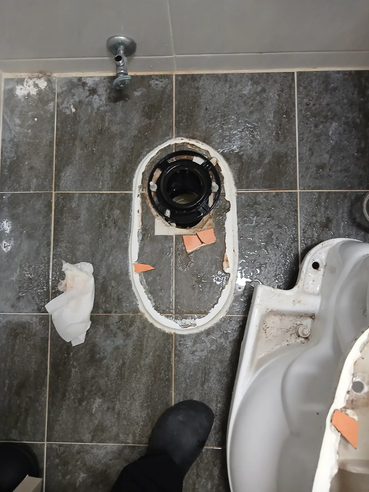
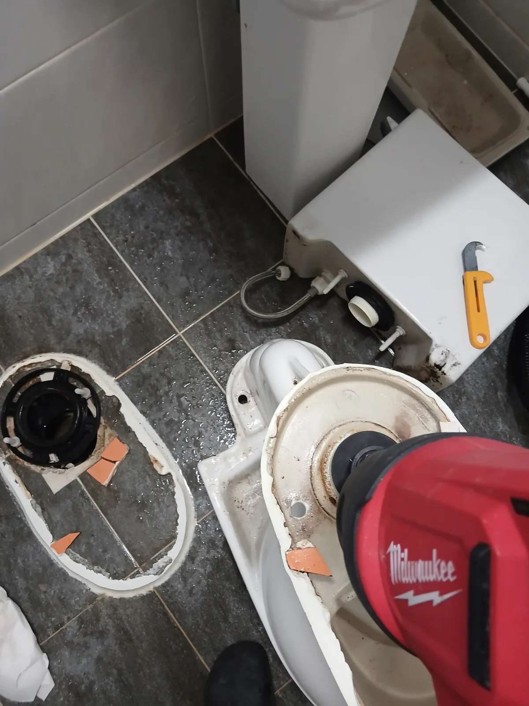

관악구 봉천동 변기막힘, 현장 도착 후 진단
관악구 봉천동에서 변기가 막혀 사용이 어렵다는 요청을 접수하고 필요한 장비를 준비해 신속하게 현장으로 이동했습니다. 숙련 기술자가 먼저 배수 상태를 확인한 결과 단순히 물길만 확보하고 끝내기보다 변기를 탈거해 막힘 위치를 직접 확인하는 것이 적절하다고 판단했습니다.
변기막힘은 원인과 막힘 위치를 확인하지 않은 채 작업을 반복하면 불필요한 작업이나 비용이 발생할 수 있습니다. 신라건축설비는 현장 상태를 먼저 확인하고 필요한 작업과 비용을 안내한 뒤 적합한 공법을 적용하는 것을 원칙으로 합니다.
1단계: 증상 확인과 필요한 장비 작업
변기를 안전하게 탈거한 뒤 변기 하부와 오수관 입구 상태를 확인했습니다. 변기를 완전히 분리해 변기 자체의 막힘인지 하부 배관 문제인지 구분한 뒤 필요한 작업 범위를 결정했습니다.
이후 변기 내부에 밀워키 에어건을 적용해 압력을 전달하며 걸려 있던 이물질을 제거했습니다. 무조건 강한 장비를 사용하는 것이 아니라 실제 막힘 위치와 상태를 확인한 뒤 필요한 장비와 작업 방법을 선택하는 것이 변기막힘 해결의 중요한 과정입니다.

2단계: 원인 구간 처리와 정상 작동 확인
에어건 작업 후에는 리지드 습식 석션기를 이용해 잔존 이물질과 오염물을 흡입했습니다. 변기 하부 오수관도 함께 확인해 배수 흐름에 추가적인 문제가 없는지 점검했습니다.
막힘을 제거한 뒤 변기를 원위치에 재설치하고 실제 물을 내려보내 통수 상태를 확인했습니다. 단순히 한 번 물이 내려가는지만 보는 것이 아니라 반복 사용에도 배수에 문제가 없는지 최종 확인한 뒤 작업을 마무리했습니다.

작업 결과와 재발 방지 안내
관악구 봉천동 변기막힘은 변기 탈거와 에어건, 석션 작업을 통해 정상적인 배수 상태를 확보했습니다. 고객이 불필요한 추가 작업으로 부담을 느끼지 않도록 현장에서 확인된 상태를 기준으로 필요한 작업만 진행했으며, 작업 내용과 비용도 이해하기 쉽게 안내했습니다. 막힘 제거 후에는 실제 통수 상태를 다시 확인해 변기를 정상적으로 사용할 수 있는 상태까지 점검하고 작업을 마무리했습니다.
변기에는 물에 잘 풀리는 화장지 외에 물티슈, 위생용품, 두꺼운 휴지나 기타 이물질을 넣지 않는 것이 좋습니다. 특히 반복적으로 막히거나 물이 천천히 내려간다면 무리하게 여러 번 물을 내리기보다 변기 내부와 오수관 상태를 정확하게 점검하는 것이 추가 역류 피해와 불필요한 비용을 줄이는 방법입니다.
변기막힘은 같은 증상이라도 원인과 필요한 작업이 다를 수 있기 때문에 처음부터 정확한 진단과 작업 범위, 비용 안내가 명확한 전문업체를 선택하는 것이 중요합니다. 단순한 막힘에 불필요한 공정을 추가하거나 원인을 확인하지 않은 채 작업을 반복하면 오히려 비용 부담이 커질 수 있습니다.
신라건축설비는 변기막힘·싱크대막힘·하수구막힘을 전문적으로 해결하며 서울·경기 전 지역에 신속하게 출동하고 있습니다. 숙련 기술자가 현장 상태를 직접 확인하고 필요한 작업을 안내한 뒤 적합한 장비와 공법을 선택하며, 생활 막힘부터 배관 내시경검사, 석션, 관통, 샤프트, 고압세척은 물론 공용배관·오수관과 배관 보수공사까지 현장 상황에 맞춰 대응하고 있습니다.
최종 조치: 변기 탈거 후 에어건을 이용해 변기 내부 이물질을 제거하고 석션 작업을 병행했습니다. 하부 오수관 상태를 확인한 뒤 변기를 재설치하고 최종 통수 상태까지 점검했습니다.
현장 방문 전 확인하는 비용과 작업 범위
신라건축설비는 현장 증상과 배관 구조를 확인한 뒤 필요한 작업과 예상 비용을 안내합니다. 단순 관통으로 해결되는지, 배관내시경·석션·고압세척 또는 변기 탈거가 필요한지는 현장 상태에 따라 달라집니다. 출장비와 야간 작업비, 추가 장비 비용이 발생할 수 있는 경우 작업 전에 먼저 설명하고 동의를 받은 범위에서 진행합니다.
업체를 선택할 때 확인할 사항
무조건적인 ‘0원’ 표현보다 실제 작업 범위, 추가 비용 조건, 사용 장비와 사후 대응 기준을 확인하는 것이 중요합니다. 해결되지 않았을 때의 비용 기준과 작업 후 동일 증상 발생 시 점검 범위를 사전에 문의해두면 불필요한 분쟁을 줄일 수 있습니다.
관악구 변기막힘 자주 묻는 질문
변기를 꼭 탈거해야 하나요?
변기 물이 원활하게 내려가지 않는 막힘 증상이 발생한 현장입니다. 단순 관통만으로 처리하기보다 변기 내부와 하부 오수관을 함께 확인할 필요가 있어 변기 탈거 작업을 진행했습니다.처럼 증상이 나타나더라도 원인은 현장마다 다를 수 있습니다. 장비와 배관 구조를 확인한 뒤 필요한 작업 범위를 안내합니다.
작업 전 비용을 알 수 있나요?
작업 전 증상과 현장 여건을 확인해 예상 범위와 비용을 먼저 안내합니다. 변기 탈거, 장비 추가 투입 또는 공용배관 작업이 필요한 경우 고객 동의 없이 임의로 진행하지 않습니다.
같은 증상이 다시 생기면 어떻게 하나요?
완료 후 정상 작동을 함께 확인하고 작업 범위에 따른 사후 안내를 드립니다. 동일 증상이 반복되면 현장 기록을 기준으로 원인을 다시 점검합니다.
변기막힘 서울·경기 출동지역
신라건축설비는 관악구 봉천동 현장을 포함해 서울 25개 구와 경기도 31개 시·군의 배관 문제를 상담합니다. 현장 거리와 기사 배정 상황에 따라 출동 가능 여부를 먼저 안내드립니다.
서울 전 지역
강남구 · 강동구 · 강북구 · 강서구 · 관악구 · 광진구 · 구로구 · 금천구 · 노원구 · 도봉구 · 동대문구 · 동작구 · 마포구 · 서대문구 · 서초구 · 성동구 · 성북구 · 송파구 · 양천구 · 영등포구 · 용산구 · 은평구 · 종로구 · 중구 · 중랑구
경기도 주요 출동지역
수원시 · 용인시 · 고양시 · 화성시 · 성남시 · 부천시 · 남양주시 · 안산시 · 평택시 · 안양시 · 시흥시 · 파주시 · 김포시 · 의정부시 · 광주시 · 하남시 · 광명시 · 군포시 · 양주시 · 오산시 · 이천시 · 안성시 · 구리시 · 의왕시 · 포천시 · 양평군 · 여주시 · 동두천시 · 과천시 · 가평군 · 연천군